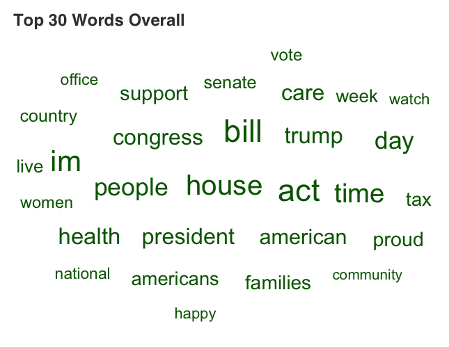
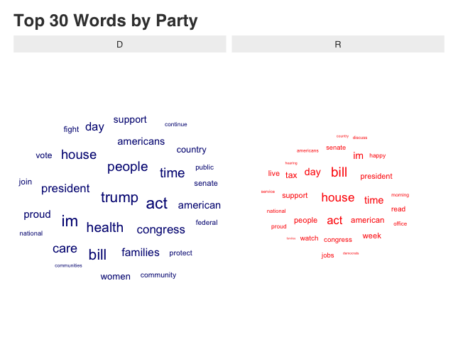
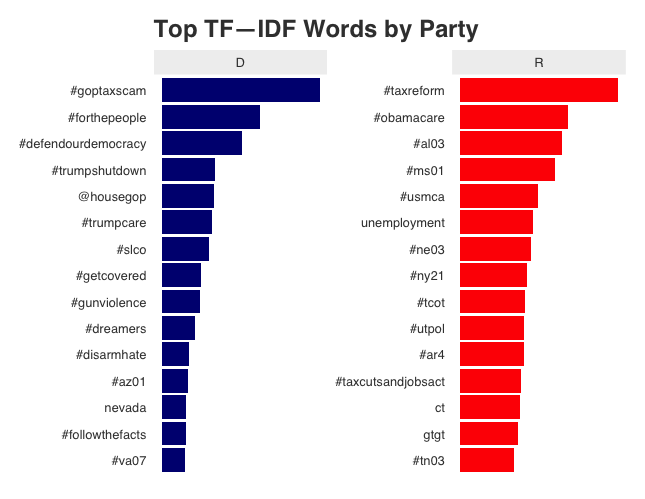
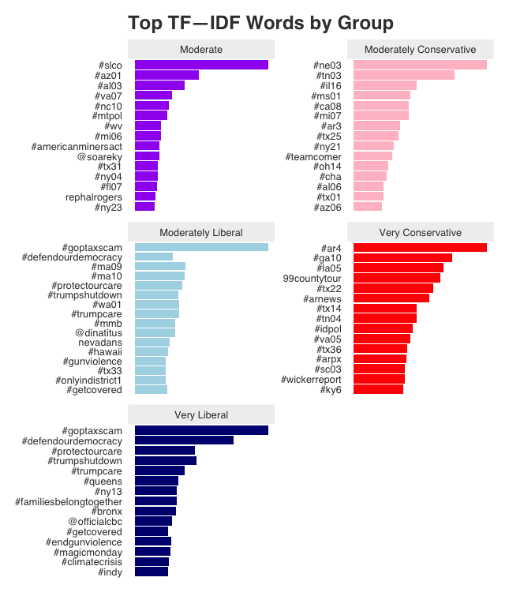
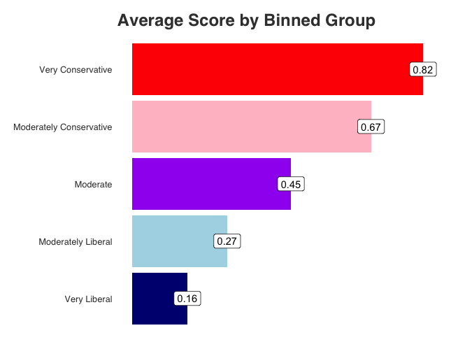
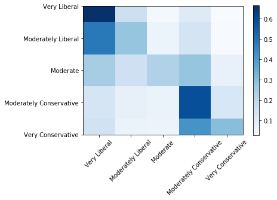
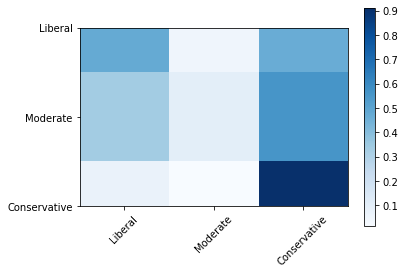

Modeling Politicization on Short Form Text Data
Noah Olsen
Data Science MS Candidate, The George Washington University
Noah Olsen
Data Science MS Candidate, The George Washington University
Noah Olsen is a graduate student at The George Washington University studying Data Science. His interests lie at the intersection of natural language processing and network analysis, analyzing NLP and neural networks can better inform the analysis and discovery of complex networks. He has worked in the communications and advertising industries. In his free time he enjoys running, skiing, and cooking.
Several prior models have looked at trying to classify text based off political ideology. That being said, for the most part these models have focused on longer pieces of text like news articles to try and detect political bias in the news media (Doumit & Minai, 2011), or documents that are almost always political in nature like congressional floor speeches (Iyers, Enns, Boyd-Graber, & Resnik, 2014) rather than short form content like tweets that will be used in this paper’s model.
Doumit & Minai 2011 collected articles from over 30 worldwide news organizations and used Latent Dirichlet Allocation to extract a set of topics for each news outlet and proceeded to apply a sentiment analysis model. While the study did not identify a clear answer for whether or not there is an overwhelming bias in the media, the authors note the importance of key terms and phrases in their model.
Iyers, Enns, Boyd-Graber, & Resnik (2014) used the Convote dataset from Thomas et al. (2006) containing congressional floor speeches from 2005, labeled according to the political party of the speech’s author. They then trained a recurrent neural network (RNN) after filtering the speeches for a set of explicitly political key phrases the authors took from Yano et al. (2010). This was due to the authors’ belief that that not all words in sentences in political speeches are inherently political, and that by filtering for a smaller set of key topics they could improve the accuracy of their neural network. Their approach was novel as similar attempts at these sorts of tasks had relied on logistic regression using the bag-of-words technique along with word2vec which the authors’ model outperformed significantly. Compared to their logistic regression benchmark which achieved 64.7% accuracy on their classification task, their best model which used a recurrent neural network with word2vec word embeddings to achieve over 70% accuracy. The authors of this paper note the importance of word embeddings in their success and will also be extremely important in the model we present below.
Not many models have been developed to identify the political ideology have been trained off of Twitter data, but those that have almost exclusively focus on a set of linguistic features to help make these determinations rather than relying on recurrent neural networks. In Djemili et al. (2014) the authors trained such a model whereby they applied a set of linguistic rules to a dataset of tweets they scraped containing tweets from French politicians resulting in a corpus of just over 34,000 tweets. It is important to note that while this corpus was in French, the methods and conclusions of the paper are applicable across languages. The model classified tweets as ideological or not ideological rather than ascribing them to a particular political ideology like is done in many of the models described up to this point.
The initial dataset was obtained by scraping the most recent 3,200 tweets from 563 accounts belonging to members of the United States Senate and House of Representatives. The number of accounts is greater than the total number of Senators and Representatives because some them have more than one account. The initial scrape resulted in 1.44 million tweets written between February 10th 2009 and March 3rd 2020. A graphical representation of how these tweets are distributed over time can be seen in the graph below.

The process described in the methodology section will involve scoring each tweet according to the political ideology of its author. Looking at the distribution of tweets by political party we get the graph below showing slightly more tweets from democrats than republicans, but the data set is still fairly balanced.

The ideologies scores for each member of Congress were taken from govtrack. Their scores are set on a scale of 0 to 1 with 0 being extremely liberal and 1 being extremely conservative. The average ideology score for each party can be seen in the graph below.

More importantly for this project than the ideology distribution of the people writing the tweets, is the content of the tweets themeselves. One the pecularities of using twitter as a dataset is the length of of tweets, which for our purposes we will refer to as documents. The average number of characters per tweet was just under 170 characters, the left side of the distribution looks like you'd probably expect with a long tail. However, the right side of the distribution lacks this same tail due to Twitter limiting the number of characters per tweet to 280, resulting in hard stop on the right side of the distribution.

One of the conditions we will need to hold in order for a model like the one we are trying to construct to work is the fact that Democrats and Republicans are talking about significantly different topics to differentiate between the two. As such, gaining an understanding of what each group is talking about is important step in establishing the viability of the model. When looking at the top 30 words overall regardless of party, the results are fairly standard for what you might expect members of Congress to be talking about. The vast majority of the words have to do with government or political issues
While looking at the same plot broken down by party does show small differences, at first glance it doesn't create the stark contrast that you might expect. This is likely because at the end of the day, both Republicans and Democrats are talking about the same issues just from very different perspectives. That being said, there are small differences that can be observed, for example it appears Republicans use the word "democrat"
Another way to look at this problem, is to look at the top words for each party in terms of the term frequency–inverse document frequency (TFIDF) which can be seen as a measure of the most unique words for a document, or in this case a group of documents.
Now we really start to see the difference between the two classes, with Democrats talking about issues like "#goptaxshutdown", "#trumpshutdown", and "#gunviolence" while Republicans are discussing issues like "#taxreform", "#obamacare", and "unemployment". Is it also very interesting to see that the graph looking at the top words for each party doesn't have a single Twitter hashtag (#) but the top words in terms of TF–IDF for each party are almost hashtags, showing their potential value and importance in an eventual model. For our model though rather than simply labeling text to a certain party, we will split the data into five equal bins, which results in the TF–IDF plot below.
This strategy has several advantages discussed in the methodology section of the site but the groups have the average scores shown in the plot below.
The goal of this model to accurately assess whether strings of text are partisan.
As described in the data section, I am training the model on over a million tweets from members
of Congress and assigning each tweet a partisan score based on a partisan score of the tweet's author.
To solve this problem, we will be treating it as a text classification problem, with each tweet assigned to one
of 5 bins according to its partisan score I described above. These bins were be labeled "Very Liberal", "Moderately Liberal",
"Modarately Conservative", and "Very Conservative". More information on these bins can be found in the data section. The model
itself is a recurrent neural network where the input are pretrained GloVe word vectors, specifically their
Twitter model trained on 2B tweets resulting in 27B tokens. I decided
to use these vectors instead of something like TF-IDF vectors because of the breadth of tokens as well as the fact the vectors
were trained directly on Twitter data, the same source as the data for my model. To train the classifier, I decided to use Gated
Recurrent Units (GRUs) which tend to perform better than Long Short Term Memory (LSTM) units for shorter pieces of text like tweets.
As will be discussed in the Results section, the version of the model that attempted to classify tweets into the 5 categories mentioned above
performed quite poorly due primarily to the fact that while the model was very effective at categorizing very liberal and very conservative
tweets, it really struggled with more moderate content. As a result the final model consolidated the categories down to three with the labels
"Liberal", "Moderate", and "Conservative". For more details on the performance of the model please see the results section.
Several prior models have looked at trying to classify text based off political ideology. That being said, for the most part these models have focused on longer pieces of text like news articles to try and detect political bias in the news media (Doumit & Minai, 2011), or documents that are almost always political in nature like congressional floor speeches (Iyers, Enns, Boyd-Graber, & Resnik, 2014) rather than short form content like tweets that will be used in this paper’s model.
Doumit & Minai 2011 collected articles from over 30 worldwide news organizations and used Latent Dirichlet Allocation to extract a set of topics for each news outlet and proceeded to apply a sentiment analysis model. While the study did not identify a clear answer for whether or not there is an overwhelming bias in the media, authors note the importance of key terms and phrases in their model.
Iyers, Enns, Boyd-Graber, & Resnik (2014) used the Convote dataset from Thomas et al. (2006) containing congressional floor speeches from 2005 labeled according to the political party of the speech’s author to train a recurrent neural network (RNN) after filtering the speeches for a set of explicitly political key phrases the authors took from Yano et al. (2010). This was due to the authors’ belief that that not all words in sentences in political speeches are inherently political, and that by filtering for a smaller set of key topics they could improve the accuracy of their neural network. Their approach was novel as similar attempts at these sorts of tasks had relied on logistic regression using the bag-of-words technique along with word2vec which the authors’ model outperformed significantly. Compared to their logistic regression benchmark which achieved 64.7% accuracy on their classification task, their best model which used a recurrent neural network with word2vec word embeddings to achieve over 70% accuracy. The authors of this paper note the importance of word embeddings in their success and will also be extremely important in the model we present below.
As discussed in the methodology section, we ended up running two models, while the specifications for the model stayed the same, the big change was the number of categories used for categorization. The first model produced the confusion matrix by classificaiton category below.
The model performed very well at the extremes with the "Very Liberal" and "Very Conservative" groups, with an accuracy of almost 70% for the "Very Liberal" group. However, when trying to analyze more moderate content, the model really struggled accurately classifying only about 30% of tweets.
To try and fix this problem, I tried consolidating the "Very Liberal" and "Moderately Liberal" groups into a single "Liberal" bin, and the "Very Conservative" and "Moderately Conservative" categories into a single "Conservative" bin, and then kept the "Moderate" bin as is. This drastically improved the accuracy model, resulting in the confusion matrix below. While the model still struggled with accurately categorizing the "Moderate" category, it's improved performance with the "Liberal" and "Conservative" groups raised the overall accuracy of the model to about 70%. More work needs to be done, as will be discussed in the in the Future Work section, trying to accurately categorize the more neutral content in the "Moderate Category".

Models using Recurrent Neural Networks and word embeddings like the one we have presented in this paper are extremely effective at classifying political tweets at the margins achieving over 90% accuracy in some cases, however when it comes to classifying more moderate content to the model struggled mightily achieving no better than random accuracy. One reason for this is because of the size of the corpus used for the model, manually scoring the ideology of each tweet was impossible. The result of this was scores for tweets that accurately reflected the general political orientation of their authors but failed to detect the nuance of individual tweets. Given that members of Congress don’t only tweet about topics that are political in nature, some tweets were labeled partisan according to their author but in reality, were fairly neutral. In future work I would like to train the model on a dataset that was annotated at the individual tweet level or borrow methods from papers like Yano et al. (2010) where tweets were labeled for specific topics there were inherently political using a set of key words. This will allow on the model to pick up on more of the nuance of political discourse than it currently does.
Additionally, as I mentioned in the introduction one of this model’s potential applications is to be included in future bot detection and foreign interference initiatives where the manipulation of political decisions and beliefs is a core objective. Incorporating models like the one presented in this paper will allow for bot detection algorithms to more accurately differentiate complex bot networks with political social engineering objectives from smaller more harmless networks.